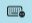

This icon means that Axe is not enabled. Any app can see your keystrokes.
This icon means that Axe is not enabled. Any app can see your keystrokes.Welcome to Axe, the unkeylogger. Axe keeps those pesky keyloggers from reading your keystrokes. It’s an added bit of security, for those who really need it. By keeping keyloggers from reading your keystrokes, attackers won’t be able to learn the sensitive information you type, like passwords, special numbers, and search terms 🙃.
When you first open Axe, Axe will be disabled. Clicking on the status bar button will enable Axe, which will block other applications other than the frontmost one from receiving your keystrokes. Clicking the button again and Axe will be disabled and all apps will be able to read your keystrokes.
To access preferences, or to Quit Axe, right click on the icon.
Here are two of the icons you’ll see:
This icon means that Axe is not enabled. Any app can see your keystrokes.
 This icon means that Axe is enabled. Only the frontmost app can see your keystrokes.
This icon means that Axe is enabled. Only the frontmost app can see your keystrokes.
Other apps and password fields may enable Secure Input without notifying you. The app can turn Secure Input off whenever it wants to.
When Axe is not active, but Secure Input is enabled, Axe will display a keyboard icon.
This icon means that another app has enabled Secure Input, but Axe is not active
To enable Axe, click the button. If Axe is enabled and the app turns Secure Input off for itself, Secure Input will still be enabled. If Axe is disabled and another app has enabled Secure Input, Axe will return to this Special Case.
The Special Case will disable automatically when the app ends its use of Secure Input.
Preferences →
Learn about the Preferences within Axe.
Quitting →
Learn about Quitting Axe.
When you begin typing in a password field on macOS something called “Secure Input” turns on. Secure Input will keep other apps on your computer from reading your keystrokes. You might have Secure Input enabled in your terminal. Secure Input is enabled when you enable Axe.
Learn more about Secure Input →
Secure Input might mess up the MX Master Mouse. Logitech needs to fix their drivers.
Linus Skucas
linus@linus.sh